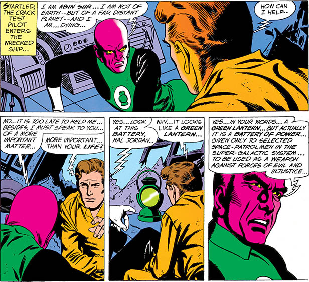
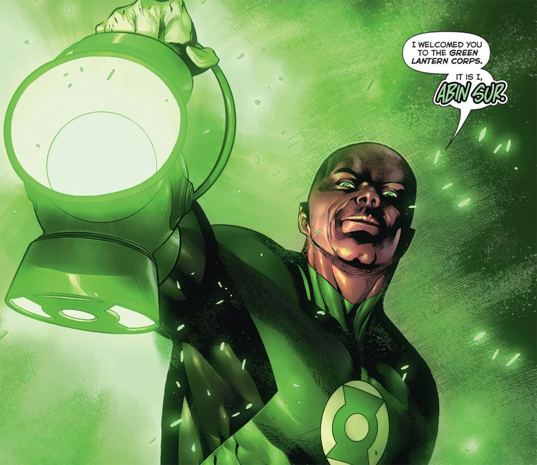

In-Universe History · 1959
Abin Sur's Last Flight
A dying Lantern crash-lands on Earth — and chooses his successor.

1959
Key figures

Abin SurThe dying Lantern of Sector 2814 — his ring chose Hal Jordan Hal JordanFearless test pilot — the ring's choice
Hal JordanFearless test pilot — the ring's choice
The story
Abin Sur of Ungara was one of the greatest Green Lanterns who ever lived — the Lantern of Sector 2814, a veteran of countless campaigns. But even the greatest Lanterns fall. Mortally wounded, his starship came down in the desert outside Coast City, California. As his life ebbed away, his power ring did what it was built to do: it went looking for a successor.
The ring scanned for one quality above all — the ability to overcome great fear. It found Hal Jordan, a test pilot at Ferris Aircraft, and carried the dying Abin Sur's final charge to him. With his last breath, Abin Sur told Hal what the ring was, what it demanded, and what it meant. Then the greatest Lantern of his age was gone.
This is the moment the entire modern mythos begins. Abin Sur's death passes the torch — from him to Hal Jordan, from Hal to the Corps, the Guardians, Oa, and everything after. It was first told in Showcase #22 (1959), by John Broome and Gil Kane.
Showcase (1956) #22 — interior excerpt from “SOS Green Lantern”. Gil Kane (interior pencils); Joe Giella (interior inks). Artwork source & details.
Artwork credits (3 images)
Credits refer to the illustrations shown here. Open a record for sources, adaptations and unresolved details. Some artwork and source pages contain story spoilers.
- Abin Sur — Showcase (1956) #22 — interior excerpt from “SOS Green Lantern”. Gil Kane (interior pencils); Joe Giella (interior inks).
- Abin Sur — Hal Jordan and the Green Lantern Corps #9 (2016), interior splash, cropped detail. Rafa Sandoval (interior pencils); Jordi Tarragona (interior inks); Tomeu Morey (interior colors).
- Hal Jordan — Hal Jordan and the Green Lantern Corps #45 (2018), Tyler Kirkham variant cover, cropped detail. Tyler Kirkham (cover pencils and inks); Arif Prianto (cover colors).